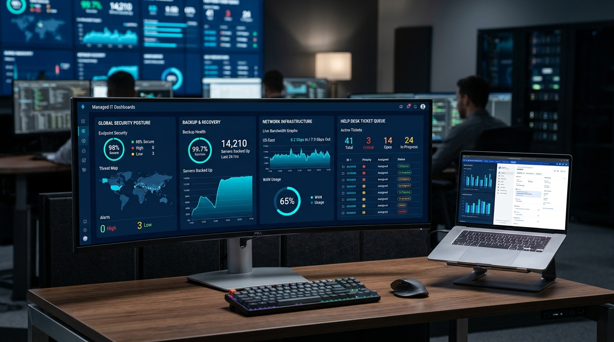

TI gerenciada para empresas que não podem parar — um responsável pela sua operação
Suporte contínuo, backup seguro, cloud, segurança e telefonia coordenados pela mesma equipe. Elimine chamados sem dono, servidores instáveis e a insegurança de não saber se seus dados estão realmente protegidos.

Qual é o desafio mais urgente da sua TI hoje?
Clique no cenário que mais se aproxima da dor atual da sua empresa para entender como resolvemos.
Servidor caiu de novo?
Cada hora de sistema inoperante custa caro para a reputação e o caixa da empresa. Sem monitoramento preventivo, problemas de disco, memória e energia só são descobertos depois que a operação já travou.
Governança Preventiva & Atendimento com SLA
Monitoramento contínuo 24/7/365 que identifica falhas antes de virarem paradas, além de redundância e espelhamento em nuvem.
Solicitar proposta para sanar este risco agoraAs 4 Frentes Fundamentais da TI Gerenciada
Combinamos suporte, segurança, backup e servidores em um único contrato para que a diretoria tenha tranquilidade total.
01. Suporte Técnico & Help Desk MSP
Atendimento ilimitado remoto e presencial para computadores, notebooks e periféricos da sua equipe.
02. Segurança da Informação & Firewall
Camadas de blindagem digital para proteger dados sigilosos e cumprir requisitos da LGPD.
03. Backup Gerenciado & Disaster Recovery (DRP)
Seus arquivos e bancos de dados protegidos com a consagrada estratégia de cópia 3-2-1.
04. Servidores, Nuvem & Microsoft 365
Ambientes corporativos estáveis em Windows Server, Linux, nuvem híbrida e pacote Microsoft.
Avalie o Nível de Risco da sua TI
Informe a quantidade de computadores e marque as vulnerabilidades que sua empresa enfrenta hoje para ver a análise de risco.
Alto risco de paralisação por ransomware, falha de hardware ou perda de dados sem recuperação.
SLA de Atendimento: Até 2 horas úteis
Para 17 dispositivos cobertos
Como assumimos e organizamos a TI da sua empresa
Metodologia clara e planejada para que sua equipe continue trabalhando normalmente durante a transição.
Inventário & Auditoria
Mapeamento de todos os computadores, servidores, roteadores, licenças e vulnerabilidades sem custo.
Saneamento do Ambiente
Remoção de softwares piratas, instalação de antivírus corporativo EDR e fechamento de portas vulneráveis.
Padronização & Backup
Implantação da rotina de backup 3-2-1 com teste prático de restauração e documentação de senhas.
Operação com SLA
Help desk ativo para todos os colaboradores, monitoramento 24/7 e relatórios mensais para a diretoria.
Perguntas Frequentes sobre TI Gerenciada
Pronto para modernizar a comunicação da sua empresa?
Preencha o formulário e receba um diagnóstico sem compromisso em até 30 minutos ou fale diretamente com nossos consultores técnicos.
Seus dados comerciais nunca serão compartilhados com terceiros nem usados para spam.